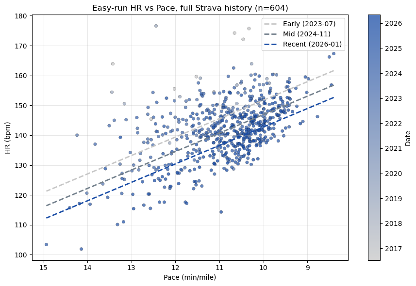
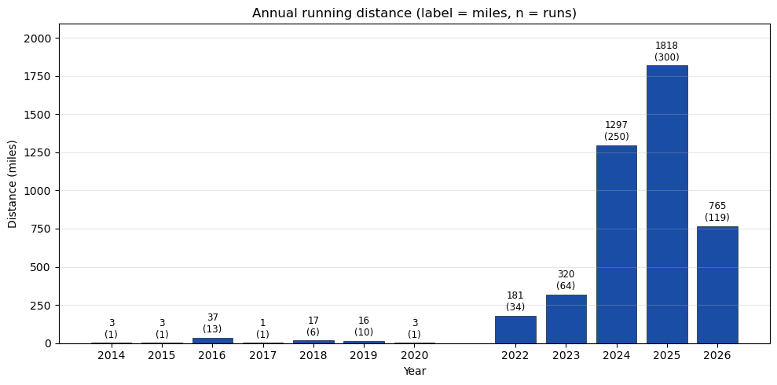
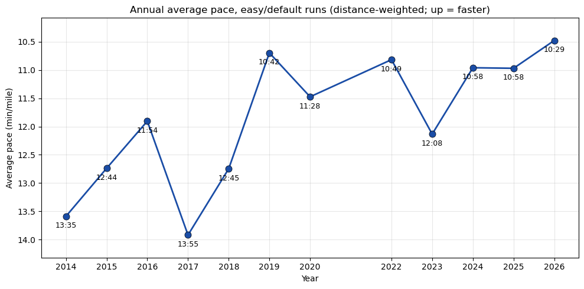

Pulling 11 years of Strava activities to look at aerobic fitness and race pace progression
Published
May 6, 2026
Code
import jsonfrom datetime import datetimefrom pathlib import Pathfrom collections import defaultdictimport numpy as npimport matplotlib.pyplot as pltimport matplotlib.dates as mdatesfrom matplotlib.colors import LinearSegmentedColormapfrom scipy.optimize import curve_fit# Custom monotonic gray -> blue colormap, used in all plots belowgray_blue = LinearSegmentedColormap.from_list('gray_blue', [(0.78, 0.78, 0.78), (0.10, 0.30, 0.65)])BLUE = (0.10, 0.30, 0.65)
Motivation
I started keeping a weekly running spreadsheet in December and noticed the numbers were drifting in the right direction: pace getting faster, HR lower at the same effort. It felt like I was getting fitter, but few months of subjective feel is not entirely reliable. So, I pulled my full Strava history (11 years, 803 runs) and tried to look at it more carefully.
Here, I’ll focus on two questions: is my aerobic fitness actually improving (recently and over the long arc), and how has race pace progressed across distances over the last few years?
Pulling Strava data
Strava has a public API. After the OAuth dance and a paginated pull through /athlete/activities, I had 803 runs back to 2014, 777 of them with HR data, although I only started running more seriously from 2023. The fetch script is short, just access-token refresh and saving everything to a single activities.json. I’ll skip the fetch code in this post; here, I’m just loading the saved JSON.
Each activity comes with start_date, distance, average_speed, average_heartrate, workout_type, and a few other fields. The workout_type field is the most useful one for filtering. Strava lets you tag runs as Race (1), Workout (2), Long Run (3), or default/easy (None or 0).
Code
acts = json.loads(Path('activities.json').read_text())runs = [a for a in acts if a.get('type') =='Run']with_hr = [a for a in runs if a.get('average_heartrate')]print(f'Total activities: {len(acts)}')print(f'Runs: {len(runs)}')print(f'Runs with avg HR: {len(with_hr)}')print(f'Date range: {min(a["start_date"][:10] for a in runs)} -> {max(a["start_date"][:10] for a in runs)}')
Total activities: 919
Runs: 803
Runs with avg HR: 777
Date range: 2014-11-04 -> 2026-05-05
Aerobic fitness: easy-run HR vs pace
Same pace, lower HR is the textbook signal of improving aerobic fitness. Let’s plot HR against pace, restricted to easy runs.
I filtered to workout_type in {None, 0}, excluded treadmill runs (HR data is unreliable indoors for me), and dropped runs longer than 15 mi (cardiac drift over long runs inflates HR and breaks the linear pace–HR relationship). Note that I also dropped runs shorter than 1 mi, since those tend to be warmups or interrupted runs.
Code
EASY_TYPES = {None, 0}records = []for a in acts:if a.get('type') !='Run': continueif a.get('workout_type') notin EASY_TYPES: continue hr = a.get('average_heartrate') spd = a.get('average_speed') # m/s dist_mi = a.get('distance', 0) /1609.34ifnot hr ornot spd or hr <90or hr >200: continue pace =26.8224/ spd # min/miif pace <6or pace >15: continueif dist_mi <1.0or dist_mi >15: continueif a.get('trainer'): continue records.append({'date': datetime.fromisoformat(a['start_date'].replace('Z','+00:00')).date(),'pace': pace,'hr': hr, })records.sort(key=lambda r: r['date'])print(f'Filtered easy runs: {len(records)}')dates = np.array([mdates.date2num(r['date']) for r in records])paces = np.array([r['pace'] for r in records])hrs = np.array([r['hr'] for r in records])# Multivariate linear: HR ~ pace + dateX = np.column_stack([paces, dates, np.ones_like(paces)])coef, *_ = np.linalg.lstsq(X, hrs, rcond=None)a_, b_, c_ = coefresid = hrs - X @ coefprint(f'Pace coef: {a_:.2f} bpm per +1 min/mi slower')print(f'Drift: {b_*365:+.2f} bpm/year at fixed pace')print(f'R^2: {1- resid.var()/hrs.var():.3f} resid std: {resid.std():.2f} bpm')fig, ax = plt.subplots(figsize=(9, 6))sc = ax.scatter(paces, hrs, c=dates, cmap=gray_blue, s=22, edgecolor='k', linewidth=0.2, alpha=0.75)cbar = plt.colorbar(sc, ax=ax)loc = mdates.AutoDateLocator(); cbar.ax.yaxis.set_major_locator(loc)cbar.ax.yaxis.set_major_formatter(mdates.ConciseDateFormatter(loc))cbar.set_label('Date')for q, color, lbl in [(0.10, (0.78, 0.78, 0.78), 'Early'), (0.50, (0.45, 0.50, 0.55), 'Mid'), (0.90, (0.10, 0.30, 0.65), 'Recent')]: qd = np.percentile(dates, q*100) xs = np.linspace(paces.min(), paces.max(), 50) ax.plot(xs, a_*xs + b_*qd + c_, '--', color=color, lw=2, label=f'{lbl} ({mdates.num2date(qd):%Y-%m})')ax.invert_xaxis()ax.set_xlabel('Pace (min/mile)'); ax.set_ylabel('HR (bpm)')ax.set_title(f'Easy-run HR vs Pace, full Strava history (n={len(records)})')ax.grid(alpha=0.3); ax.legend()plt.tight_layout()plt.show()
Filtered easy runs: 604
Pace coef: -6.18 bpm per +1 min/mi slower
Drift: -3.50 bpm/year at fixed pace
R^2: 0.531 resid std: 6.93 bpm

Three regression lines (early, mid, recent) share a similar pace–HR slope but stack with progressively lower intercepts. At every pace, recent HR is meaningfully below early HR.
The time-series view makes the trajectory clearer if I normalize HR to a fixed reference pace (9:30/mi) using the regression coefficient above, then plot a 90-day rolling median:
Code
ref_pace =9.5hr_norm = hrs - a_ * (paces - ref_pace)fig, ax = plt.subplots(figsize=(11, 5))ax.scatter([r['date'] for r in records], hr_norm, c=dates, cmap=gray_blue, s=16, alpha=0.5, edgecolor='none')order = np.argsort(dates); t_s, h_s = dates[order], hr_norm[order]window =90roll_x, roll_y = [], []for i inrange(len(t_s)): mask = (t_s >= t_s[i]-window/2) & (t_s <= t_s[i]+window/2)if mask.sum() >=5: roll_x.append(t_s[i]); roll_y.append(np.median(h_s[mask]))ax.plot([mdates.num2date(x) for x in roll_x], roll_y, color=BLUE, lw=2, label='90-day rolling median')ax.set_ylabel('HR @ 9:30 pace (bpm, lower = fitter)')ax.set_xlabel('Date')ax.xaxis.set_major_locator(mdates.YearLocator())ax.xaxis.set_major_formatter(mdates.DateFormatter('%Y'))ax.set_title('Pace-normalized easy HR over 11 years')ax.grid(alpha=0.3); ax.legend()plt.tight_layout()plt.show()# Yearly medians at 9:30print('Year HR @ 9:30 n')for y insorted({r['date'].year for r in records}): mask = np.array([r['date'].year == y for r in records])if mask.sum() <3: continueprint(f'{y}{np.median(hr_norm[mask]):6.1f}{mask.sum():4d}')
Wow, that’s about a 32 bpm drop over a decade at the same pace. In 2017, I ran a turkey trot with my kids and I only trained few weeks, then stopped. In 2019, I moved to Los Angeles, and tried running, but I switched over to cycling because running sucked at the time (I wasn’t in shape for running). I again started running in 2023, and kept going. I was running/walking in the beginning, but consistency helped. I broke my ankle at the end of 2023, but kept running after the recovery. Consistency does pay off.
The same pattern shows up in just the recent ~10 weeks of my training spreadsheet, where a multivariate HR ~ pace + date fit gives roughly −0.9 bpm/month at fixed pace. So, the long-arc trend is not just a decade-old story; it is still going.
Volume and average pace
Above is filtered to easy runs. It might also be informative to look at total distance and average pace by year, across all runs.
Code
year_dist = defaultdict(float) # milesyear_time = defaultdict(float) # seconds (moving)year_count = defaultdict(int)year_dist_easy = defaultdict(float)year_time_easy = defaultdict(float)for a in acts:if a.get('type') !='Run': continueif a.get('manual'): continue dist_mi = a.get('distance', 0) /1609.34 mtime = a.get('moving_time', 0)if dist_mi <=0or mtime <=0: continue year = datetime.fromisoformat(a['start_date'].replace('Z','+00:00')).year year_dist[year] += dist_mi year_time[year] += mtime year_count[year] +=1if a.get('workout_type') in (None, 0): year_dist_easy[year] += dist_mi year_time_easy[year] += mtimeyears =sorted(year_dist)dist = [year_dist[y] for y in years]counts = [year_count[y] for y in years]pace_easy = [year_time_easy[y]/60/ year_dist_easy[y] if year_dist_easy[y] >0elseNonefor y in years]fig, ax = plt.subplots(figsize=(10, 5))ax.bar(years, dist, color=BLUE, edgecolor='k', linewidth=0.4)for x, y_, n inzip(years, dist, counts): ax.text(x, y_+max(dist)*0.01, f'{y_:.0f}\n({n})', ha='center', va='bottom', fontsize=8.5, color='k')ax.set_xlabel('Year'); ax.set_ylabel('Distance (miles)')ax.set_title('Annual running distance (label = miles, n = runs)')ax.set_xticks(years); ax.grid(alpha=0.3, axis='y')ax.set_ylim(0, max(dist)*1.15)plt.tight_layout()plt.show()

Late 2023 is when I jumped from running ~5 mi/week to ~25 mi/week, then roughly doubled again in 2024. 2025 finished at 1818 mi; 2026 is on pace for ~2200.
Code
fig, ax = plt.subplots(figsize=(10, 5))easy_pace = np.array([p if p isnotNoneelse np.nan for p in pace_easy], dtype=float)ax.plot(years, easy_pace, '-o', color=BLUE, lw=2, ms=8, mec='k', mew=0.5)for y, p, n inzip(years, easy_pace, counts):if np.isnan(p): continue m =int(p); s =int(round((p-m)*60)) ax.annotate(f'{m}:{s:02d}', xy=(y, p), xytext=(0, -14), textcoords='offset points', ha='center', fontsize=9)ax.set_xlabel('Year'); ax.set_ylabel('Average pace (min/mile)')ax.set_title('Annual average pace, easy/default runs (distance-weighted; up = faster)')ax.set_xticks(years)ymin = np.nanmin(easy_pace) -0.4ymax = np.nanmax(easy_pace) +0.4ax.set_ylim(ymax, ymin) # invert so up = fasterax.grid(alpha=0.3)plt.tight_layout()plt.show()

Annual average pace was actually slower during the high-volume ramp years (10:58 in 2024–2025) than during a lower-volume 2019. That’s because the new volume came in mostly at easy pace. But 2026 has dropped to 10:29. Same volume, run faster.
Race pace progression
Easy-run HR is a leading indicator; race times are the ground truth. Strava lets me filter workout_type == 1 (Race), and after dropping a few activities where I was pacing someone else (not my own effort), I had 11 races across 2024–2026.
The empirical relationship between race pace and distance is roughly logarithmic. Pace gets slower at longer distances, but the falloff slows down. Let’s fit pace = a + b·log10(distance) per year and see what changes.
Code
def log_curve(d, a, b):return a + b * np.log10(d)# Races where I was pacing someone else, not my own effortPACING_RUNS = {'2026-03-01', '2026-03-08', '2025-11-27', '2025-07-27','2025-04-27', '2025-03-15', '2025-05-17',}races = []for a in acts:if a.get('type') !='Run'or a.get('workout_type') !=1: continue spd = a.get('average_speed') dist_mi = a.get('distance', 0) /1609.34ifnot spd or dist_mi <=0: continue pace =26.8224/ spd date_str = a['start_date'][:10]if date_str in PACING_RUNS: continueif pace >13: continue races.append({'date': datetime.fromisoformat(a['start_date'].replace('Z','+00:00')).date(),'year': datetime.fromisoformat(a['start_date'].replace('Z','+00:00')).year,'dist': dist_mi,'pace': pace,'name': a.get('name',''), })races.sort(key=lambda r: r['date'])print(f'Races kept: {len(races)}')year_fits = {}print('\nPer-year log fits: pace = a + b*log10(distance)')for yr insorted({r['year'] for r in races}): rs = [r for r in races if r['year'] == yr]iflen(rs) <2: continue d = np.array([r['dist'] for r in rs]) p = np.array([r['pace'] for r in rs]) po, _ = curve_fit(log_curve, d, p, maxfev=20000) pred = log_curve(d, *po) r2 =1- (p - pred).var() / p.var() iflen(p) >2else1.0 year_fits[yr] = (po, r2, len(rs))print(f' {yr} (n={len(rs)}): a={po[0]:.2f} b={po[1]:+.2f} 'f'pace@5K={log_curve(3.107,*po):.2f} pace@HM={log_curve(13.11,*po):.2f} 'f'pace@M={log_curve(26.22,*po):.2f} R^2={r2:.2f}')years_set =sorted({r['year'] for r in races})y_min, y_max =min(years_set), max(years_set)def year_color(y):return gray_blue((y - y_min) /max(1, y_max - y_min))fig, ax = plt.subplots(figsize=(10, 6.5))for r in races: ax.scatter(r['dist'], r['pace'], color=year_color(r['year']), s=80, edgecolor='k', linewidth=0.6, zorder=3) ax.annotate(f"{r['date']:%y-%m}", xy=(r['dist'], r['pace']), xytext=(4, 4), textcoords='offset points', fontsize=7, alpha=0.8)xs = np.linspace(2, max(r['dist'] for r in races)*1.05, 400)for yr, (po, r2y, n) in year_fits.items(): label =f'{yr} fit (n={n}'if n >2: label +=f', R^2={r2y:.2f}' label +=')' ax.plot(xs, log_curve(xs, *po), '-', color=year_color(yr), lw=2.2, label=label)for yr in years_set: ax.scatter([], [], color=year_color(yr), s=60, edgecolor='k', label=f'{yr} races')ax.set_xlabel('Distance (miles)')ax.set_ylabel('Pace (min/mile, lower = faster)')ax.set_title(f'Race pace vs distance, log fit per year (n={len(races)})')ax.grid(alpha=0.3)ax.legend(loc='lower right', fontsize=9)plt.tight_layout()plt.show()
Two things stood out. First, the slopes (b ≈ 3.0) are nearly identical across years, so the shape of how I handle distance isn’t really changing; the whole curve is shifting downward as base fitness improves. Second, improvement is roughly uniform across distances, about 45–60 sec/mi gained per year at every distance. So this is not a “got faster at 5K but lost the marathon” story, or vice versa, although my marathon time is much slower than what my 5K/half time predicts. So, there’s a room for an improvement.
Conclusion
The two questions I started with both have a clear answer. Easy-run HR at fixed pace is the lowest it has ever been and still trending down, even just over the past few months. Race pace has dropped roughly 45–60 sec/mi per year at every distance from 5K through marathon, and the log-curve shape has stayed consistent across years.
A few things I find interesting and would like to dig into more:
The Riegel formula T_2 = T_1 * (D_2/D_1)^1.06 predicts a marathon ~13% faster than I actually run, given my recent 5K. The half-marathon is also slower than predicted, but the gap is much smaller. I suspect this is muscular endurance / fueling and not aerobic capacity (race-day HR was lower at the marathon than at the half, which is the opposite of what an aerobic limit would look like), but I would like to look at this more carefully.
The workout_type labels are not always reliable. Some runs tagged easy in the data are clearly tempo runs based on HR. A cleaner pass over the data, or a model that infers workout type from pace/HR distribution within the activity, would probably tighten the regressions.
I just started a 16 week 5K training block. It would be interesting to run this every few months or so to keep track if I’m improving and look for a bottleneck in my training.